바이브코더를 위한 파이썬 ① 코드를 먼저 돌려 보고 이해해요
오늘부터 교과 [기본] AI 서비스 개발이 시작돼요(18일 중 1일차). 개발자가 되려는 수업이 아니에요. 코드가 어떤 원리로 돌아가는지 직접 실행해 보면서 이해하고, AI 도구로 결과를 만들고 검증하는 경험을 해요. 이 경험이 있으면 개발자나 AI에게 무엇을 요청해야 하는지, 받은 결과가 맞는지 판단할 수 있어요.
PM파이썬_내이름 1개교육 개요
| 시간 | 09:00–18:00 (점심 12:00–13:00, 수업 8시간) |
|---|---|
| 교과 | [기본] AI 서비스 개발 · 1일차 (총 18일). 이 교과 전체에서는 Python, FastAPI, 데이터베이스, 배포까지 다뤄요. 오늘과 다음 수업은 그 첫 단계인 Python 서비스 개발 기초 문법을 Colab에서 익혀요. |
| 교육 목표 | AI의 도움을 받아 비전공자가 프로그램이 동작하는 원리를 이해하고, 파이썬 기초 문법을 직접 실행하며, AI가 고친 코드를 실행 결과로 검증하는 습관을 만든다. |
| 수업이 끝나면 | ① Colab과 내장 AI(Gemini)를 쓸 수 있다 ② 프로그램이 동작하는 원리(입력·처리·출력)를 설명할 수 있다 ③ 기초 문법 5가지(변수·조건·리스트·반복·random)를 직접 실행하고 개념을 말할 수 있다 ④ AI가 고친 코드를 기대한 결과와 비교해 검증할 수 있다 |
수업 전 준비
수업은 브라우저 하나로 진행해요. 프로그램을 설치하지 않으니, 계정만 미리 로그인해 오면 돼요.
- Google 계정: 개인 계정을 권장해요. 회사 계정은 보안 정책 때문에 Colab이나 Gemini 기능이 막혀 있을 수 있어요. Colab 공식 FAQ에 따르면 Colab의 AI 기능은 구글 계정 연령이 만 18세 이상이어야 쓸 수 있어요.
- ChatGPT·Claude 유료 계정: 과정용 계정 두 개를 웹 버전으로 열어 두세요. 수업 중에 막히거나, 개념을 쉬운 말로 다시 듣고 싶거나, Gemini의 답을 다른 AI로 확인하고 싶을 때 써요.
- 기기: Chrome 브라우저가 설치된 노트북 (태블릿·휴대폰은 권장하지 않아요)
오늘 코드와 질문에는 교안의 가상 상품·가격만 써요. 회사 자료나 개인 정보는 AI 대화창과 Colab 노트에 넣지 않아요.
Colab과 친해지기
오늘 수업의 모든 실습은 Google Colab에서 해요. 처음 보는 도구라 낯설 수 있지만, 꼭 필요한 개념은 몇 가지뿐이에요. Colab이 무엇인지, 화면의 기본 단위가 어떤 역할을 하는지 알고 첫 코드를 실행해요.
1-1. Colab이란 무엇인가
Colab(정식 이름 Colaboratory)은 구글이 만든 온라인 코드 실행 노트예요. 원래 구글 리서치 팀이 연구자들을 위해 만들었고, 2017년에 일반 사용자에게 공개되었어요. 파이썬 코드를 내 컴퓨터가 아니라 구글의 서버에서 실행해 주기 때문에, 브라우저만 있으면 설치 없이 바로 코딩을 시작할 수 있어요. 구글 문서처럼 구글 드라이브에 자동 저장되고, 링크로 공유할 수도 있어요.
| 항목 | 내용 |
|---|---|
| 만든 곳 | Google (Google Research) |
| 요금 | 기본 무료. 구글 계정만 있으면 쓸 수 있어요. 더 빠른 컴퓨터 자원이 필요한 사람을 위한 유료 요금제(Colab Pro 등)가 있고, 2026년 9월 22일부터는 Google AI 요금제 구독자에게도 Colab 프리미엄 혜택이 포함되기 시작했어요. 이 수업은 무료로 충분해요. |
| 저장 위치 | 내 구글 드라이브의 "Colab Notebooks" 폴더 |
| 기반 기술 | 데이터 분석가들이 널리 쓰는 "주피터 노트북(Jupyter Notebook)"을 웹에서 쓸 수 있게 만든 것 |
요금제의 가격과 구성은 자주 바뀌어요. 유료 요금제가 궁금하면 Colab 공식 요금 안내 페이지에서 최신 정보를 확인해요. 오늘 실습은 모두 무료 기능으로 해요.
1-2. 노트, 코드 셀, 텍스트 셀은 무슨 역할인가
Colab 파일 하나를 노트(노트북)라고 불러요. 노트는 칸(셀)들이 위에서 아래로 쌓인 문서예요. 칸에는 두 종류가 있어요. 컴퓨터에게 시키는 일을 적는 코드 셀, 사람이 읽을 설명을 적는 텍스트 셀이에요. 이렇게 나눠 두면 코드와 그 코드의 의도·결과 해석을 한 문서에 함께 남길 수 있어요. 나중에 내가 다시 보거나 동료에게 공유했을 때 "무엇을 왜 했는지"가 함께 전달돼요.
| 구성 요소 | 역할 | 왜 필요한가 |
|---|---|---|
| 노트 | 코드, 설명, 실행 결과를 한 파일에 담는 문서 | 작업 과정 전체를 하나의 기록으로 남기고 공유할 수 있어요. 기획서 한 장에 근거와 결론이 같이 있는 것과 비슷해요. |
| 코드 셀 | 컴퓨터에게 시킬 일을 적는 칸. 실행하면 결과가 칸 바로 아래에 나타나요. | 한 칸씩 실행하고 확인할 수 있어서, 어디서 문제가 생겼는지 찾기 쉬워요. |
| 텍스트 셀 | 사람이 읽는 메모·설명을 적는 칸. 실행되지 않아요. | 코드의 의도, 결과 해석, 다음 할 일을 기록해요. 과제 정리도 여기에 해요. |
| 런타임 | 코드를 실제로 실행해 주는 구글 서버와의 연결 | 오래 쓰지 않으면 연결이 끊기고 기억하던 값이 사라져요. 그럴 때는 위에서부터 다시 실행하면 돼요. |
코드 셀을 실행할 때는 셀 왼쪽의 ▶ 버튼을 누르거나 Shift+Enter를 눌러요. 노트를 공유할 때는 오른쪽 위 [공유]를 눌러요.
1-3. 실습: Colab 열고 첫 코드 실행하기
실습 오늘 하루 동안 쓸 노트를 만들어요. 이후 모든 실습은 이 노트 하나에 셀을 추가하며 이어 가요.
STEP 1. 검색해서 Colab 들어가기
구글 코랩을 검색해요.colab.research.google.com인 결과(①)를 눌러요. 주소창에 직접 입력해도 같은 곳으로 가요.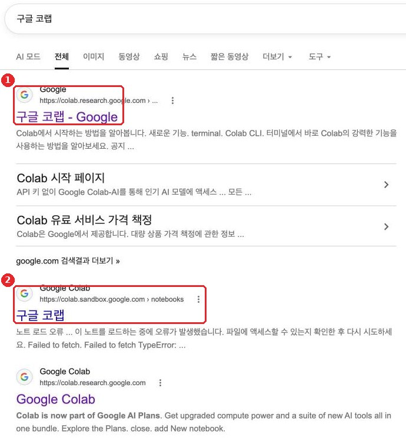
- 주소가 다른 결과(②)는 설명에 "노트 로드 오류"가 보여요. 누르지 않아요.
- Chrome에 Google 계정이 여러 개 로그인되어 있으면 노트가 다른 계정의 Drive에 저장될 수 있어요. 오른쪽 위 프로필 사진으로 과정용 계정인지 확인해요.
- 회사 계정은 관리자 정책으로 Colab이나 Gemini가 막혀 있을 수 있어요. 안 열리면 개인 Gmail 계정으로 바꿔요.
STEP 2. 새 노트 만들기
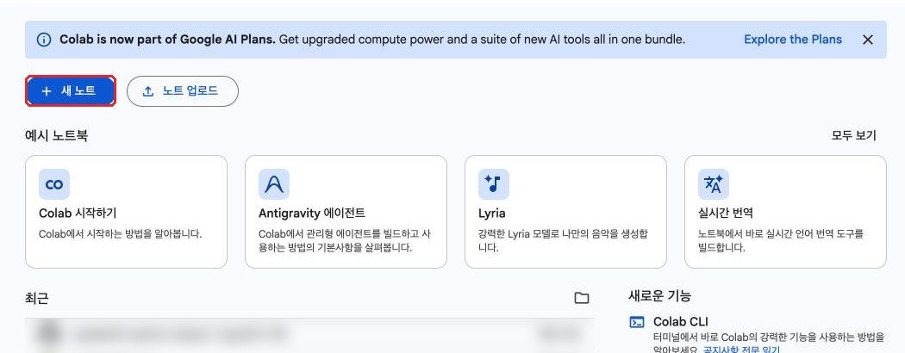
STEP 3. 노트 이름 바꾸기
Untitled0.ipynb 같은 이름)을 눌러요.PM파이썬_내이름으로 바꾸고 Enter를 눌러요. 예: PM파이썬_김수정. 뒤의 .ipynb는 그대로 둬도 돼요.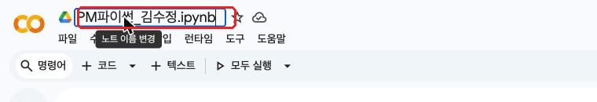
이름 옆에 잠깐 "저장 중..."이 보였다가 사라지면 내 Google Drive의 Colab Notebooks 폴더에 저장된 거예요. 따로 저장 버튼을 누르지 않아도 돼요.
STEP 4. Colab 화면 둘러보기
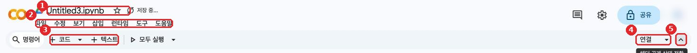
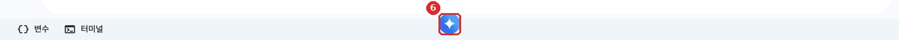
| 번호 | 이름 | 무엇을 하나 |
|---|---|---|
| ① | 노트 이름 | 눌러서 이름을 바꿔요. 앞의 Drive 아이콘은 내 Google Drive에 저장된다는 표시예요. |
| ② | 메뉴 | 파일·수정·보기·삽입·런타임·도구·도움말. 오늘은 거의 쓰지 않아요. |
| ③ | + 코드 / + 텍스트 | 선택한 셀 아래에 코드 셀·텍스트 셀을 추가해요. |
| ④ | 연결 / RAM·디스크 | 처음엔 [연결]로 보이고, 코드를 실행하면 자동으로 연결돼요. 연결되면 ✓와 RAM·디스크 막대로 바뀌어요. |
| ⑤ | 헤더 접기(⌄) | 노트 이름·메뉴 줄을 접었다 펴요. 메뉴가 안 보이면 여기를 눌러요. |
| ⑥ | Gemini 아이콘 | 누르면 오른쪽에 Gemini 대화창이 열려요. (실습 1-4) |
STEP 5. 첫 코드 실행하기
print("안녕, 파이썬") # 따옴표 안의 글자를 화면에 출력
!python --version # 지금 Colab에 설치된 파이썬 버전 확인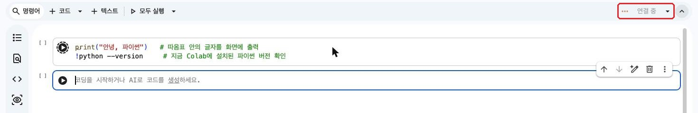
안녕, 파이썬 Python 3.13.18 ← 2026-10-29 강사 노트 기준. 숫자는 바뀔 수 있어요
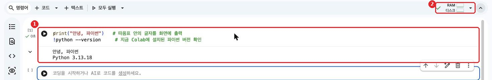
방금 무슨 일이 일어났나print()는 괄호 안의 내용을 화면에 보여 주는 명령이에요. 둘째 줄 맨 앞의 !는 파이썬 코드가 아니라 Colab 서버에 직접 내리는 명령이라는 표시예요. 셀 왼쪽의 [1]은 "첫 번째로 실행했다"는 실행 번호예요.
- 빈 셀의 밑줄 친 "생성"을 누르면 Gemini 창이 열려요(아래 그림). 붙여 넣으려던 거라면 Gemini 창 ✕로 닫고 셀의 다른 곳을 클릭해요.
- 실행 중에는 셀 왼쪽 버튼이 빙글빙글 돌아요. 이때 다시 누르면 실행이 중단될 수 있으니 기다려요.
- 직접 타이핑하다 회색 글씨(AI 제안)가 보일 때 Enter를 누르면 그 제안이 들어가요(Colab 기본 설정). 원하지 않으면 Esc를 먼저 눌러요.
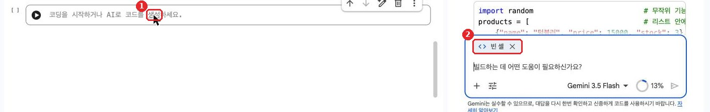
STEP 6. 텍스트 셀에 기록하기
안녕, 나는 김수정처럼 내 이름으로 바꾸고 다시 실행해요.STEP 7. 꼭 필요한 셀 조작 3가지
버튼으로 다 할 수 있어요. 단축키는 익숙해지면 쓰면 돼요.
| 하고 싶은 일 | 버튼 | 단축키 Windows | 단축키 Mac |
|---|---|---|---|
| 셀 추가 | 도구 모음 [+ 코드] | Ctrl+M 뗀 뒤 B | control+M 뗀 뒤 B |
| 셀 삭제 | 셀 오른쪽 위 휴지통 | Ctrl+M 뗀 뒤 D | control+M 뗀 뒤 D |
| 셀 복제 | 셀 ⋮ → [셀 복사] → Esc → 붙여넣기 | 붙여넣기 Ctrl+V | 붙여넣기 ⌘+V |
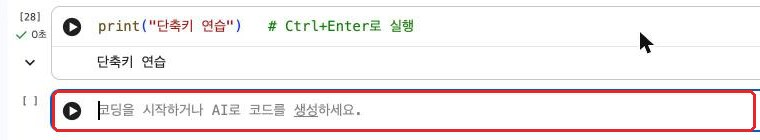
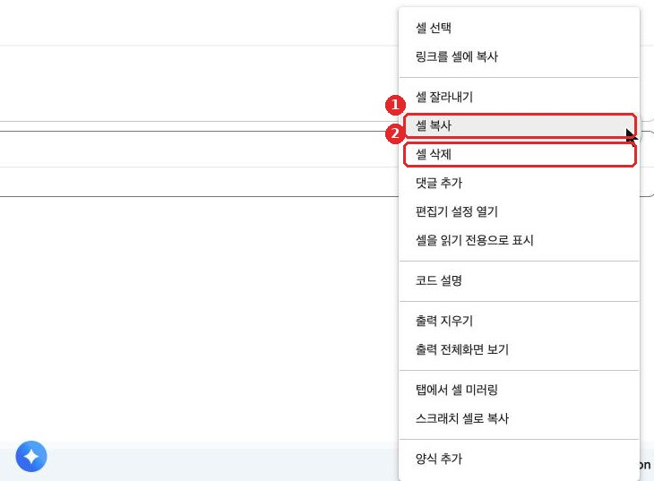
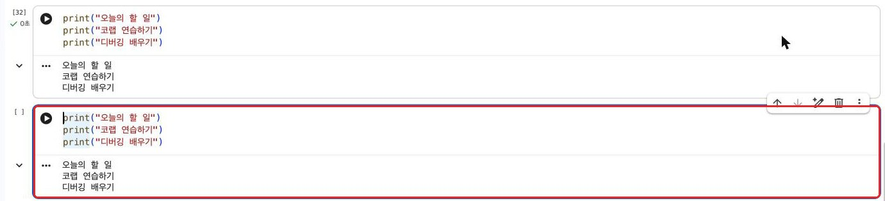
- Mac에서 ⌘+M은 창 최소화예요. 셀 단축키는 control+M을 써요.
- 셀 안에 커서가 깜박이면 편집 중이라 Ctrl+V가 글자로 붙어요. Esc를 먼저 눌러요.
- 지운 셀을 되살리려면 [수정] → 셀 삭제 실행취소를 눌러요.
- 노트 이름이
PM파이썬_내이름으로 바뀌었나요? - "안녕, 파이썬"과 파이썬 버전 두 줄이 셀 아래에 나왔나요?
- 텍스트 셀에 실습 결과를 한 줄로 남겼나요?
- 셀 추가·삭제·복제를 한 번씩 해 봤나요?
- 파이썬 버전 숫자를 채팅에 남겼나요? (세션 3에서 최신 버전과 비교해요)
1-4. 실습: Gemini에게 묻고, 코드 고치게 하기
실습 오늘 계속 쓸 Colab 속 Gemini를 먼저 짧게 써 봐요. 질문하기와 코드 고치게 하기 두 가지만 해요.
STEP 1. Gemini 창 열기
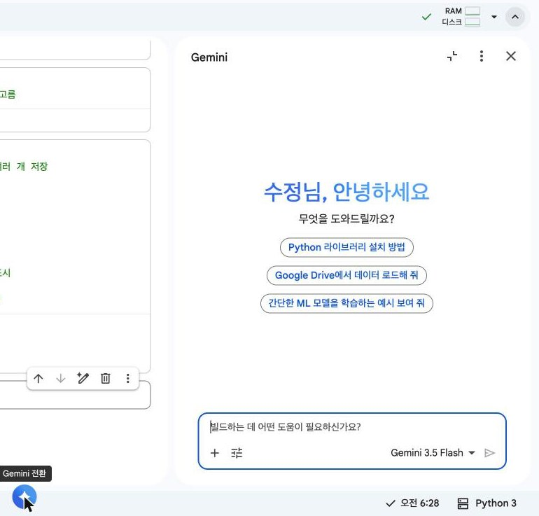
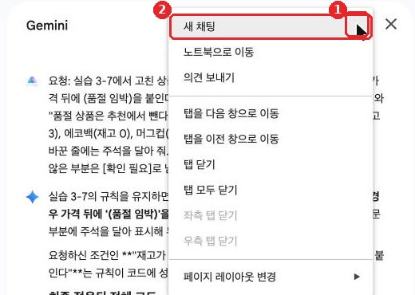
STEP 2. 질문하기
첫 번째 코드 셀의 !python --version은 무슨 뜻이야? 비개발자가 알아듣게 2문장으로 설명해 줘. 코드는 바꾸지 마.
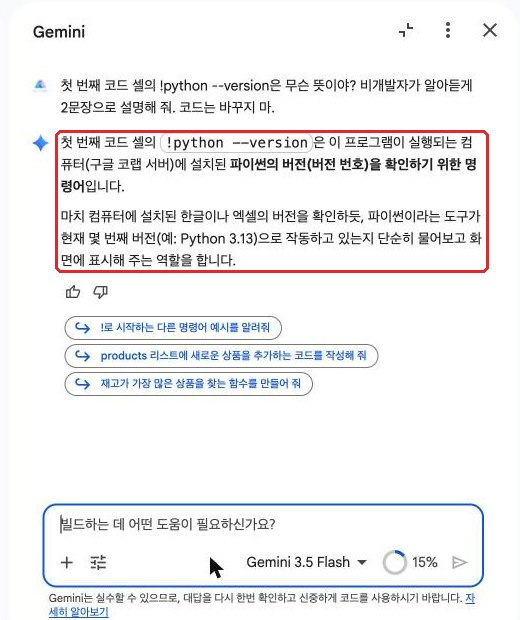
STEP 3. 코드 고치게 하기
김수정을 내 이름으로 바꿔 보내요.첫 번째 코드 셀의 "안녕, 파이썬"을 "안녕, 나는 김수정"으로 바꿔 줘. 다른 줄과 주석은 바꾸지 마.
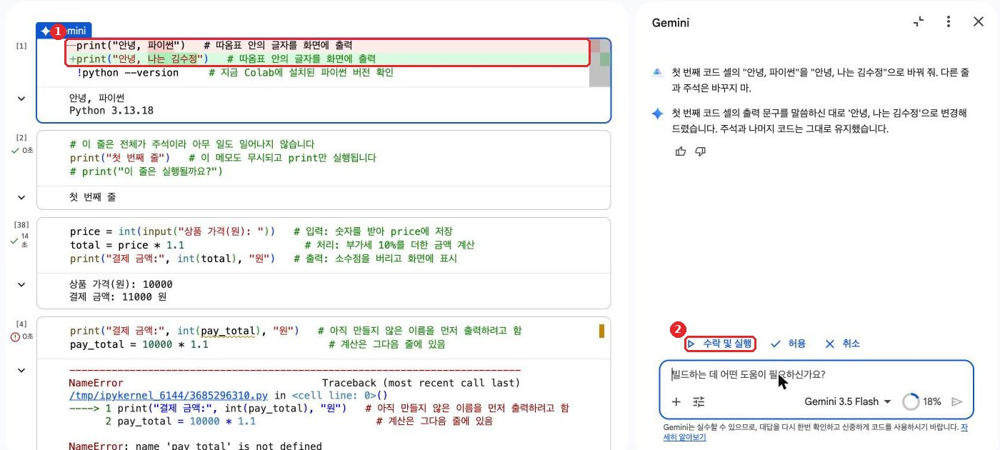
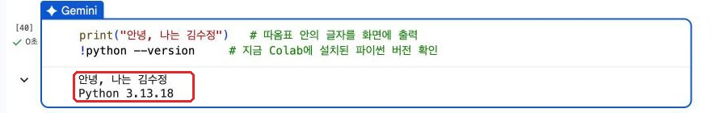
- Gemini가 고친 코드도 실행 결과로 확인해야 끝이에요. 결과 칸이 바뀌었는지 꼭 봐요.
- Gemini 입력창 오른쪽의 % 숫자는 강사 테스트에서 질문할 때마다 올라갔어요(13% → 18%). 사용 한도로 보여요 [확인 필요]. 오늘 Gemini는 실습에 필요한 만큼만 써요.
- Gemini 창이 열려 있으면 노트 영역이 좁아져요. 다 썼으면 창 오른쪽 위 ✕로 닫아요.
- Gemini 답이 실제 코드(첫 번째 셀)에 대한 설명이었나요?
- [수락 및 실행] 뒤 결과 칸이 내 이름으로 바뀌었나요?
- 바뀌면 안 되는 줄(둘째 줄, 주석)은 그대로인가요?
1-5. 실습: 내 노트 공유하기
실습 Colab 노트는 Google Drive 파일이라 링크로 공유해요. 과제를 내거나 서로 코드를 볼 때 써요.
STEP 1. 공유 창 열기
STEP 2. 일반 액세스 바꾸기
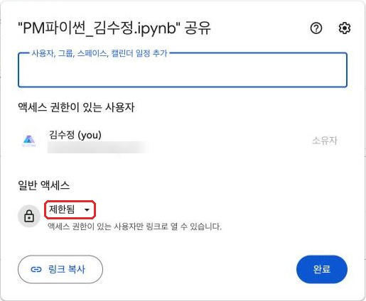
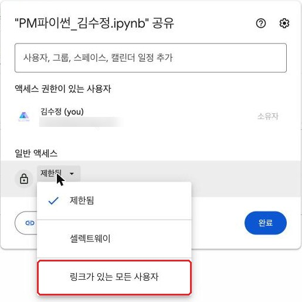
STEP 3. 권한 확인하고 링크 복사하기
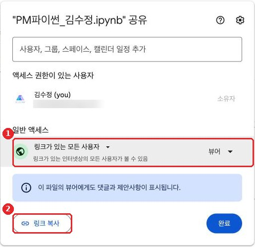
- "링크가 있는 모든 사용자"는 링크를 받은 누구나 열 수 있어요. 개인 정보나 회사 자료가 든 노트는 공유하지 않아요.
- 권한은 편집자가 아니라 뷰어로 둬요.
강사 노트 열어 보기
강사가 오늘 모든 실습을 직접 실행한 노트예요. 직접 실행해 보려면 열어서 [파일] → [Drive에 사본 저장]으로 내 Drive에 복사해서 써요.
- 일반 액세스가 "링크가 있는 모든 사용자 · 뷰어"로 바뀌었나요?
- 내 노트 링크를 채팅에 올렸나요?
- 옆 사람 링크를 열었을 때 노트가 보였나요?
1-6. 실습: 디버깅이란 무엇인가
코드가 생각대로 동작하지 않는 원인을 버그(bug), 원인을 찾아 고치는 일을 디버깅(debugging)이라고 해요. AI가 코드를 써 주는 바이브코딩에서도 똑같이 필요해요. 오류가 나면 무엇을 고쳐 달라고 할지 내가 알아야 하니까요.
| 오류 이름 | 뜻 | 흔한 원인 |
|---|---|---|
SyntaxError | 문법이 틀려 실행을 시작하지 못했어요 | 따옴표·괄호를 닫지 않음 |
NameError | 그런 이름이 없어요 | 철자·대소문자 틀림(Print), 만들기 전에 사용 |
IndentationError | 들여쓰기가 맞지 않아요 | if·for 아래 줄의 띄어쓰기가 다름 |
실습 아래 코드에는 버그가 두 개 있어요. 오류 메시지를 읽으며 하나씩 고쳐요.
STEP 1. 실행하고 첫 번째 오류 읽기
print("오늘의 할 일")
Print("코랩 연습하기")
print("디버깅 배우기)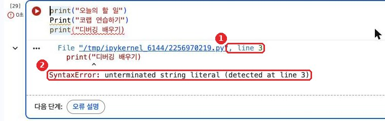
"를 추가해 print("디버깅 배우기")로 고치고 다시 실행해요.STEP 2. 두 번째 오류 읽기

Print를 print로 고치고 다시 실행해요.STEP 3. 다시 실행해서 확인하기
오늘의 할 일 코랩 연습하기 디버깅 배우기
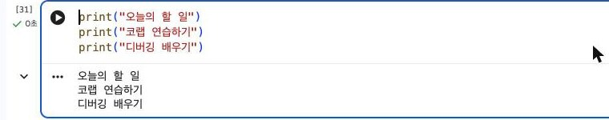
오류 칸 아래 [다음 단계: 오류 설명]을 누르면 Gemini가 원인을 설명해 줘요. 먼저 맨 아래 줄을 직접 읽어 보고, 그래도 모르겠을 때 눌러요. 고친 뒤에는 반드시 다시 실행해서 확인해요.
- 1차 실행에서 줄 번호(line 3)와 SyntaxError를 찾았나요?
- 2차 실행에서 화살표가 가리키는 줄을 찾았나요?
- 한 번에 한 곳만 고치고 다시 실행했나요?
- 세 줄이 모두 출력되었나요?
개발자나 AI에게 "안 돼요"라고만 말하면 디버깅이 길어져요. 어떤 코드를 실행했고, 몇 번째 줄에서, 어떤 오류 메시지가 나왔는지 세 가지를 함께 전달해요.
Colab 속 Gemini와 ChatGPT·Claude 함께 쓰기
Colab 안에는 구글의 생성형 AI Gemini가 들어 있어요. 이 수업에서는 Colab 안의 Gemini와 별도 창의 ChatGPT·Claude를 함께 써요. 언제 어느 AI를 쓰는지, 답이 서로 다를 때 어떻게 판단하는지 정리해요.
2-1. Colab 속 AI: Gemini
따로 사이트를 열지 않아도, 지금 보고 있는 노트의 코드와 오류를 Gemini가 직접 읽고 설명하거나 고쳐 줘요. 이 기능은 한 번에 생긴 것이 아니라 몇 단계에 걸쳐 확대되었어요.
| 시기 | 공식 발표 내용 | 출처 |
|---|---|---|
| 2023년 5월 | 구글이 Colab에 AI 코드 생성·자동완성·코딩 도우미 기능을 넣겠다고 발표 | Google 공식 블로그 |
| 2025년 3월 | Gemini 기반 "데이터 사이언스 에이전트" 무료 공개. 데이터를 올리고 분석 목표를 말하면 분석 노트를 자동으로 만들어 줌 | Google Developers Blog |
| 2025년 5월 | Google I/O 2025에서 "AI 우선(AI-first) Colab" 공개 | Google Developers Blog |
| 2025년 6월 24일 | AI 우선 Colab을 모든 사용자에게 공개. 대화로 코드 요청·설명, 자연어로 코드 수정, 오류 수정안을 비교 화면(diff)으로 제안 | Google Developers Blog |
| 2026년 4월 8일 | 학습 모드(Learn Mode)와 맞춤 지침(Custom Instructions) 추가. 학습 모드를 켜면 Gemini가 정답 코드를 바로 주는 대신 단계별로 가르쳐 주는 코딩 튜터처럼 동작함 | Google 공식 블로그 |
| 2026년 9월 22일 | Google AI 요금제에 Colab 프리미엄 혜택 포함 (더 빠른 GPU 우선 사용 등). 무료 사용자의 기본 기능은 그대로 | Google Developers Blog |
Gemini가 들어간 Colab 화면은 이렇게 나뉘어요
| 화면 영역 | 무엇이 있나 |
|---|---|
| 노트 영역(가운데) | 텍스트 셀과 코드 셀이 위에서 아래로 쌓여 있어요. 코드 셀에서 오류가 나면 결과 칸에 오류 메시지와 함께 오류 설명 기능이 나타날 수 있어요. |
| 하단 바(푸터) | Colab 공식 FAQ에 따르면 Gemini 대화창은 노트 화면 하단(푸터)의 Gemini 아이콘으로 열어요. |
| Gemini 대화창 | 지금 노트의 코드를 보고 대화해요. 학습 모드를 켤 수 있는 계정이면 여기서 켜요. |
Colab 공식 FAQ에 따르면 AI 기능은 조건에 맞는 사용자에게 기본으로 켜져 있어요. 실제 버튼의 이름과 위치는 업데이트에 따라 조금씩 다를 수 있으니, 강사 화면에서 위치를 함께 확인해요.
| Gemini 기능 | 무엇을 해 주나 | 언제 쓰나 |
|---|---|---|
| 코드 생성 | 말로 요청하면 코드를 써 줘요. | "1부터 10까지 더하는 코드 써 줘" |
| 코드·오류 설명 | 코드가 무슨 뜻인지, 에러가 왜 났는지 설명하고 수정안을 제안해요. | 모르는 코드나 빨간 에러를 만났을 때 |
| 학습 모드 | 답을 바로 주지 않고 힌트와 단계별 설명으로 이끌어 줘요. | 세션 4~6 기초 문법. 처음 배우는 사람에게 가장 추천해요. (계정·지역에 따라 메뉴가 보이지 않을 수 있어요) |
| Gemini 대화창 (데이터 사이언스 에이전트) | 노트 전체를 보고 대화해요. 데이터를 주고 분석 목표를 말하면 분석 단계를 계획하고 코드를 만들어 줘요. | 다음 수업의 데이터 분석 |
2-2. 여러 AI를 함께 쓸 때 알아야 할 것
Gemini는 지금 노트의 코드와 오류를 직접 보고 답할 수 있다는 장점이 있어요. ChatGPT와 Claude는 개념을 쉬운 말로 풀어 설명받거나, 다른 관점에서 다시 확인할 때 유용해요. 다만 여러 AI를 쓰면 같은 질문에도 서로 다른 답이 나올 수 있다는 점을 미리 알아 둬요.
- 답이 다를 수 있는 이유: 모두 생성형 AI이기 때문이에요. 생성형 AI는 정해진 정답을 찾아오는 것이 아니라, 그때그때 그럴듯한 답을 새로 만들어 내요. 그래서 AI가 다르면 답이 다르고, 같은 AI에게 같은 질문을 다시 해도 답이 달라질 수 있어요.
- AI도 실수해요: 문법은 맞지만 결과가 틀린 코드를 자신 있게 내놓기도 해요. 그래서 AI가 준 코드는 반드시 실행해서 결과를 직접 확인해요.
- 같은 대화 안에서 검증하면 AI는 자기 답을 옹호하는 경향이 있어요: 코드를 만들어 준 그 대화창에 "이거 맞아?"라고 물으면, AI는 앞서 자신이 한 답에 맞춰 "맞다"고 하기 쉬워요. 검토를 맡길 때는 새 대화창을 열거나 다른 AI에게 물어봐요.
| Colab Gemini | ChatGPT·Claude | |
|---|---|---|
| 강점 | 지금 노트의 코드·오류를 직접 보고 답해요. | 개념 설명, 비유, 다른 관점에서 교차 확인 |
| 이 수업에서 쓰는 때 | 코드 생성, 오류 설명·수정, 데이터 분석 | 막혔을 때, 질문하고 싶을 때, Gemini가 고친 코드를 다시 검토할 때 |
| 주의 | 수정안을 적용하기 전에 무엇이 바뀌는지 읽어 봐요. | 노트를 직접 보지 못하므로 코드와 에러를 글자로 붙여 넣어요. |
2-3. 실습: 같은 코드를 Gemini와 ChatGPT·Claude에게 설명받기
실습 실습 1-3의 코드를 두 곳에 설명받고, 설명이 실제 코드와 맞는지 비교해요.
STEP 1. Gemini를 학습 모드로 바꾸기
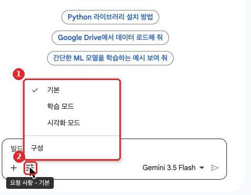
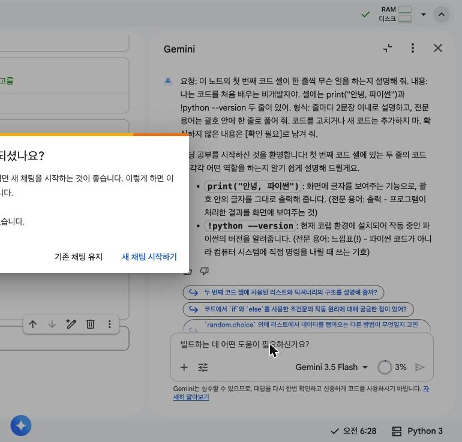
STEP 2. Gemini에게 묻기
요청: 이 노트의 첫 번째 코드 셀이 한 줄씩 무슨 일을 하는지 설명해 줘.
내용: 나는 코드를 처음 배우는 비개발자야. 셀에는 print("안녕, 파이썬")과 !python --version 두 줄이 있어.
형식: 줄마다 2문장 이내로 설명하고, 전문 용어는 괄호 안에 한 줄로 풀어 줘. 코드를 고치거나 새 코드는 추가하지 마. 확실하지 않은 내용은 [확인 필요]로 남겨 줘.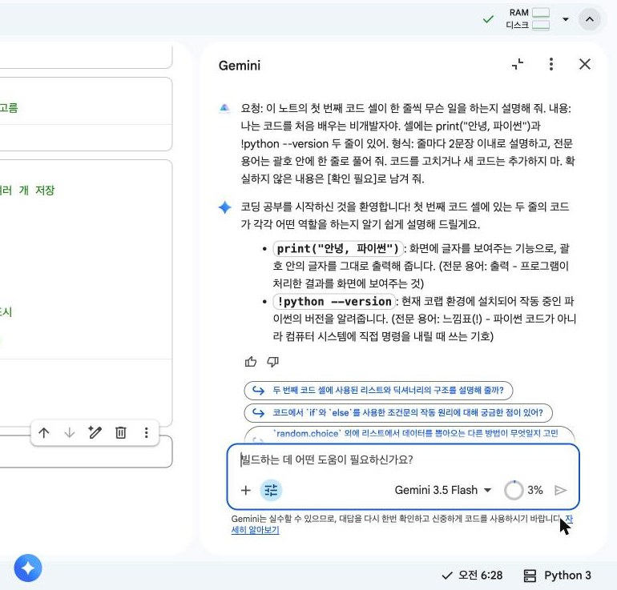
Gemini는 지금 셀 내용을 보고 답해요. 프롬프트의 "안녕, 파이썬"과 셀 내용이 달라도 괜찮아요.
STEP 3. ChatGPT 또는 Claude에게 같은 질문하기
[이 단계는 수강생 개인 계정 화면이라 캡처 없이 강사 화면으로 시연해요]
STEP 4. 두 설명 비교하기
- 두 AI 모두
print()를 "괄호 안의 내용을 화면에 보여 주는 명령"으로 설명했나요? - 두 AI 모두
!를 "Colab 서버에 내리는 명령"이라는 뜻으로 설명했나요? - 코드에 없는 내용(예: 파일을 저장한다)을 덧붙이지 않았나요?
- 두 설명에서 다른 점을 한 가지 찾아 채팅에 남겼나요?
프로그래밍은 어떻게 동작하나
프로그램이 움직이는 기본 원리와, 앞으로 모든 실습 코드에 나오는 주석이 무엇인지 먼저 이해해요. 그다음 입력·처리·출력이 있는 짧은 코드를 실행하고, 오늘 쓰는 언어 파이썬이 어떤 언어인지 알아봐요.
3-1. 입력, 처리, 출력
프로그래밍은 컴퓨터에게 할 일을 순서대로 적어 주는 일이에요. 컴퓨터는 눈치를 보거나 빠진 부분을 알아서 채우지 않고, 적힌 그대로 위에서 아래로 한 줄씩 실행해요. 거의 모든 프로그램은 무언가를 받아서(입력), 정해진 규칙대로 계산하고(처리), 결과를 보여 주는(출력) 구조로 되어 있어요. 키오스크에서 메뉴를 고르면(입력) 금액이 계산되고(처리) 영수증이 나오는(출력) 것과 같아요.
우리가 쓰는 코드는 사람이 읽을 수 있는 글이에요. 이 글을 컴퓨터가 알아듣도록 읽고 실행해 주는 프로그램을 해석기라고 불러요. Colab은 구글 서버에 이 해석기가 이미 준비되어 있는 환경이에요.
3-2. 주석이란 무엇인가
주석은 코드 안에 적어 두는 사람을 위한 메모예요. 파이썬에서는 # 기호 뒤에 쓴 내용이 주석이 되고, 컴퓨터는 실행할 때 이 부분을 완전히 무시해요. 그래서 주석에는 "이 줄이 무슨 일을 하는지", "왜 이렇게 했는지"를 한국어로 자유롭게 적을 수 있어요. 코드는 나중에 나 자신이나 동료가 다시 읽게 되므로, 주석은 기획서의 각주처럼 의도를 남기는 역할을 해요.
| 구분 | 예시 | 컴퓨터가 실행하나? |
|---|---|---|
| 코드 | price = 15000 | 실행해요 |
| 주석 | # 상품 가격을 저장 | 무시해요 |
| 코드 + 주석 | price = 15000 # 상품 가격을 저장 | # 앞까지만 실행해요 |
주석은 그대로 복사해 붙여 넣어도 실행에 영향을 주지 않아요. AI가 써 준 코드를 이해할 때도 "줄마다 주석을 달아 줘"라고 요청하면 큰 도움이 돼요.
실습 3-2. 주석은 정말 무시될까?
실습 노트에 새 코드 셀을 추가하고, 아래 코드를 복사해 붙여 넣은 뒤 Shift+Enter로 실행해요.
# 이 줄은 전체가 주석이라 아무 일도 일어나지 않습니다
print("첫 번째 줄") # 이 메모도 무시되고 print만 실행됩니다
# print("이 줄은 실행될까요?")첫 번째 줄
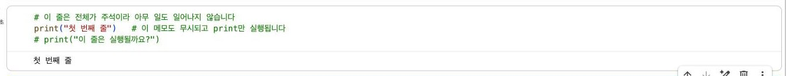
방금 무슨 일이 일어났나
출력은 한 줄뿐이에요. 셋째 줄은 print가 있지만 맨 앞에 #이 붙어 통째로 주석이 되었기 때문에 실행되지 않았어요.
더 해 보기 셋째 줄 맨 앞의 #을 지우고 다시 실행해요.
- 처음 실행했을 때 "첫 번째 줄" 한 줄만 나왔나요?
#을 지운 뒤에는 "이 줄은 실행될까요?"까지 두 줄이 나왔나요?
3-3. 실습: 입력, 처리, 출력 코드 실행하기
STEP 1. 실행하고 값 입력하기
10000을 입력한 뒤 Enter를 눌러요.price = int(input("상품 가격(원): ")) # 입력: 숫자를 받아 price에 저장
total = price * 1.1 # 처리: 부가세 10%를 더한 금액 계산
print("결제 금액:", int(total), "원") # 출력: 소수점을 버리고 화면에 표시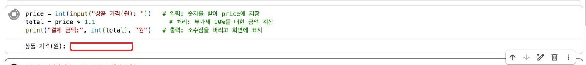
- 입력 칸이 떠 있는 동안 셀은 계속 실행 중이에요. 이때 다른 셀을 실행하면 그 셀은 기다려요(아래 그림 ②). 입력하고 Enter를 누르면 이어서 실행돼요.
10,000처럼 쉼표나 글자를 넣으면ValueError가 나요. 숫자만 입력해요.
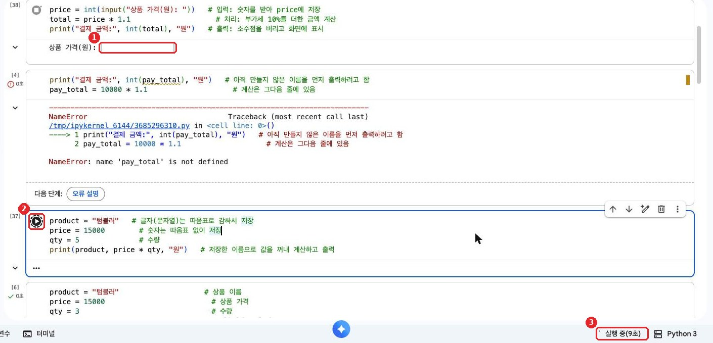
STEP 2. 결과 확인하기
상품 가격(원): 10000 결제 금액: 11000 원
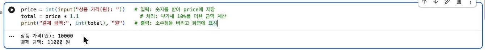
방금 무슨 일이 일어났나
첫째 줄에서 입력받은 10000이 price에 저장되고, 둘째 줄에서 1.1을 곱해 total을 계산하고, 셋째 줄에서 결과를 출력했어요. 순서가 곧 로직이에요.
25000을 입력해요. 결제 금액: 27500 원이 나오면 맞아요.STEP 3. 순서를 바꾸면 어떻게 될까
print("결제 금액:", int(pay_total), "원") # 아직 만들지 않은 이름을 먼저 출력하려고 함
pay_total = 10000 * 1.1 # 계산은 그다음 줄에 있음NameError: name 'pay_total' is not defined
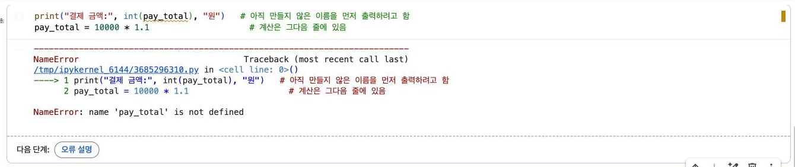
"pay_total이라는 이름이 아직 없다"는 뜻이에요. 컴퓨터는 위에서 아래로 한 줄씩 실행하기 때문에, 계산이 아래에 있으면 위에서는 쓸 수 없어요.
Colab은 한 번 실행한 셀의 값을 런타임이 끊길 때까지 기억해요. 위에서 이미
total을 만들었기 때문에, 같은 이름으로 순서를 바꾸면 예전 값이 출력되어 오류가 나지 않아요.- 점심시간처럼 오래 쉬면 런타임이 끊겨 기억하던 값이 사라질 수 있어요. 그 뒤 아래쪽 셀만 실행하면
NameError가 나요. 도구 모음 [모두 실행]으로 위에서부터 다시 실행해요. 입력 칸(실습 3-3)에서 멈추면 값을 넣어 줘요.
STEP 4. 셀 실행 순서 실험: 위 셀과 아래 셀
노트에는 셀이 위에서 아래로 놓여 있지만, Colab이 기억하는 건 셀의 위치가 아니라 내가 실행한 순서예요. 아래 두 셀로 직접 확인해요.
discount = 1000 # 셀 A: 할인 금액을 discount에 저장
print("할인 후 가격:", 15000 - discount, "원") # 셀 B: discount를 꺼내 계산① 아래 셀(B)부터 실행하면?
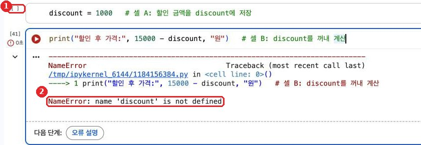
셀 A가 화면 위에 있어도, 실행하지 않았으면 Colab은 discount를 모르는 상태예요.
② 위(A) → 아래(B) 순서로 실행하면?
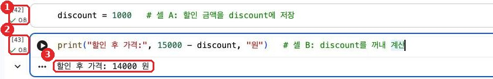
③ 위 셀(A)을 고치기만 하고, 아래 셀(B)만 다시 실행하면?
1000을 3000으로 고치고 셀 A는 실행하지 않아요.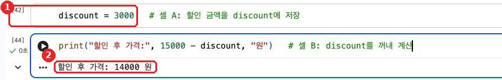
Colab이 기억하는 discount는 마지막으로 실행한 셀 A의 값(1000)이에요. 화면의 코드가 바뀌어도 실행하기 전까지는 반영되지 않아요.
④ 위 셀(A)만 다시 실행하면 아래 결과는 바뀔까?
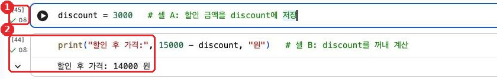
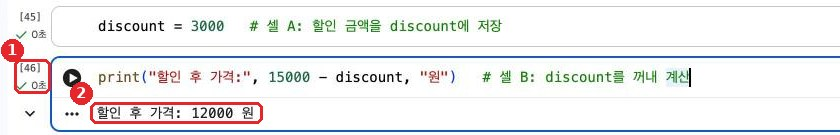
| 상황 | 셀 B 결과 | 이유 |
|---|---|---|
| ① B만 실행 | NameError | A를 한 번도 실행하지 않아 discount가 없음 |
| ② A → B | 14000 원 | A에서 1000을 저장한 뒤 B가 꺼내 씀 |
| ③ A를 3000으로 고치고 B만 실행 | 14000 원 | 고친 A를 실행하지 않아 1000이 그대로 기억됨 |
| ④ A만 다시 실행 | 14000 원 (그대로) | 값은 3000으로 바뀌었지만, B의 결과 칸은 B를 다시 실행해야 바뀜 |
| ④ 이어서 B 실행 | 12000 원 | B가 새 값 3000을 꺼내 계산 |
- 결과 칸은 그 셀을 마지막으로 실행했을 때의 결과예요. 위 셀을 바꿨다면 아래 셀도 다시 실행해야 결과가 맞아요.
- 실행 번호
[42],[43]…를 보면 어떤 순서로 실행했는지 알 수 있어요. 번호가 위아래로 뒤섞여 있으면 결과를 믿기 전에 위에서부터 다시 실행해요. - 헷갈릴 때는 도구 모음 [모두 실행]으로 위에서 아래로 한 번에 다시 실행하는 게 가장 안전해요. 그래서 노트는 위에서 아래로 읽히는 순서대로 쓰고 실행해요.
생각해 볼 질문
- 셀 B를 셀 A보다 위로 옮겨도 A → B 순서로 실행하면 결과가 나올까요? (힌트: Colab은 위치가 아니라 실행 순서를 기억해요)
- 내일 노트를 다시 열어 셀 B만 실행하면 어떻게 될까요? (힌트: 런타임이 끊기면 기억하던 값이 사라져요)
- 10000을 넣었을 때 "결제 금액: 11000 원"이 나왔나요?
- 25000을 넣었을 때 "결제 금액: 27500 원"이 나왔나요?
- 순서를 바꾼 코드에서
NameError가 나왔나요? - 셀 A를 고치고 셀 B만 실행했을 때 결과가 바뀌지 않는 이유를 말할 수 있나요?
- 세 줄 중 어느 줄이 입력·처리·출력인지 짚어 말할 수 있나요?
기획서의 "사용자가 ○○하면 △△가 보인다"라는 문장이 곧 입력·처리·출력이에요. 처리 규칙이 모호하면 개발자도 AI도 추측해서 만들어요.
3-4. 파이썬은 무엇인가
파이썬은 1991년 네덜란드의 프로그래머 귀도 반 로섬이 발표한 프로그래밍 언어예요. 지금도 계속 발전하고 있어서, 2026년 10월 기준 최신 버전은 파이썬 3.15예요(3.15.0 정식판 10월 9일, 3.15.1 10월 21일 공개). 문법이 영어 문장에 가깝고 간결해서 처음 배우는 사람에게 가장 많이 권하는 언어 중 하나이고, 동시에 데이터 분석, 업무 자동화, 인공지능 개발 같은 실무 현장에서도 널리 쓰여요. 쉽게 시작할 수 있으면서 실무에서도 바로 쓰인다는 점이 파이썬의 가장 큰 특징이에요.
보통 개발자들은 파이썬을 배울 때 내 컴퓨터에 파이썬을 설치하고, 터미널(명령어를 입력하는 검은 창)에서 연습하는 것부터 시작해요. 설치 경로 설정이나 버전 충돌 같은 문제로 첫 코드를 실행하기도 전에 막히는 입문자가 많아요. 오늘 우리는 Colab을 써서 이 단계를 건너뛰어요.
- 1설치 파일 받기python.org
- 2파이썬 설치PATH 설정 포함
- 3터미널 열기python --version 확인
- 4편집기 설치VS Code 등
- 5파일 만들고 저장hello.py
- 6터미널에서 실행python hello.py
- 7도구 설치pip install pandas
- 1Colab 열기Google 로그인
- 2새 노트[+ 새 노트]
- 3셀에 쓰고 ▶바로 결과
1~4와 7(설치·설정)은 Colab에 이미 되어 있고, 5~6(저장·실행)은 노트의 셀과 ▶ 버튼이 대신해요.
| 내 컴퓨터에서 시작 | Colab에서 시작 | |
|---|---|---|
| 파이썬 설치 | 직접 설치하고 경로 설정 | 이미 설치되어 있음 |
| 코드 쓰는 곳 | 편집기에서 파일로 저장 | 노트의 코드 셀 |
| 실행하는 곳 | 내 컴퓨터의 터미널 | 구글 클라우드의 가상 컴퓨터(런타임) |
| pandas 등 도구 | 직접 설치 | 자주 쓰는 도구는 이미 설치되어 있음 |
| 막혔을 때 | 검색, 커뮤니티 질문 | Colab Gemini와 ChatGPT·Claude에게 바로 질문 |
Colab에서 ▶를 누르면 코드는 내 노트북이 아니라 구글 클라우드에 있는, 내 계정 전용 가상 컴퓨터에서 실행돼요. 내 컴퓨터에는 아무것도 설치되지 않아요. 그래서 실습 1-3의
!python --version도 내 컴퓨터가 아니라 이 가상 컴퓨터의 파이썬 버전을 보여 준 거예요. 오래 쓰지 않으면 이 가상 컴퓨터가 정리되면서 런타임이 끊기고, 기억하던 값도 사라져요. 노트 파일(코드와 결과)은 Drive에 따로 저장되어 남아요. (내 컴퓨터를 런타임으로 연결하는 "로컬 런타임"도 있지만 오늘은 쓰지 않아요.)그럼 Colab에서는 무엇까지 해 볼 수 있을까요? 2026-10-29 강사 노트에서 직접 실행해 확인했어요.
| 하고 싶은 것 | Colab에서 | 설명 |
|---|---|---|
| 파이썬 문법 실행 | ✅ 돼요 | 오늘 실습 전체가 여기에 해당해요. |
| 외부 라이브러리 + 데이터 시각화 | ✅ 돼요 | pandas(표), matplotlib(그래프)처럼 자주 쓰는 도구는 이미 설치되어 있어 import만 하면 돼요. 없는 도구는 !pip install 도구이름으로 런타임에 설치해요. 다음 수업 데이터 분석이 이 방식이에요. |
| HTML 화면 보기 | ✅ 돼요 | 결과 칸에 HTML을 화면으로 그려 줘요. 버튼 클릭 같은 동작도 돼요. |
| 프론트엔드 + 백엔드 "헬로 웹" | ✅ 연습용으로 돼요 | 런타임(구글 클라우드의 가상 컴퓨터)에서 파이썬 웹 서버(Flask)를 실행하고, 그 화면을 결과 칸에 띄울 수 있어요. 버튼을 누르면 파이썬 서버가 답해요. |
| 웹 서비스로 공개(배포) | ❌ 안 돼요 | 런타임은 임시 컴퓨터라 끊기면 서버도 같이 꺼져요. 결과 칸의 화면은 노트를 실행 중인 화면 안에서 보는 것이지, 다른 사람에게 주소를 주고 서비스하는 용도가 아니에요. 공개하려면 DAY 3의 GitHub Pages나 별도 호스팅 서비스를 써요. |
웹 개발을 연습하고 동작을 확인하는 것까지는 돼요. 하지만 여러 사람이 쓰는 서비스로 운영(배포)하는 곳은 아니에요. Colab은 "실험실", GitHub Pages나 호스팅 서비스는 "매장"이라고 생각하면 쉬워요.
(선택) 직접 해 보기: 그래프 · HTML · 헬로 웹눌러서 펼쳐 보세요
① 라이브러리로 그래프 그리기
import matplotlib.pyplot as plt # 그래프 도구 불러오기
import pandas as pd # 표 데이터 도구 불러오기
df = pd.DataFrame({"product": ["tumbler", "ecobag", "mug"], "sales": [30, 12, 21]})
print(df)
plt.bar(df["product"], df["sales"])
plt.title("Sales by product")
plt.show()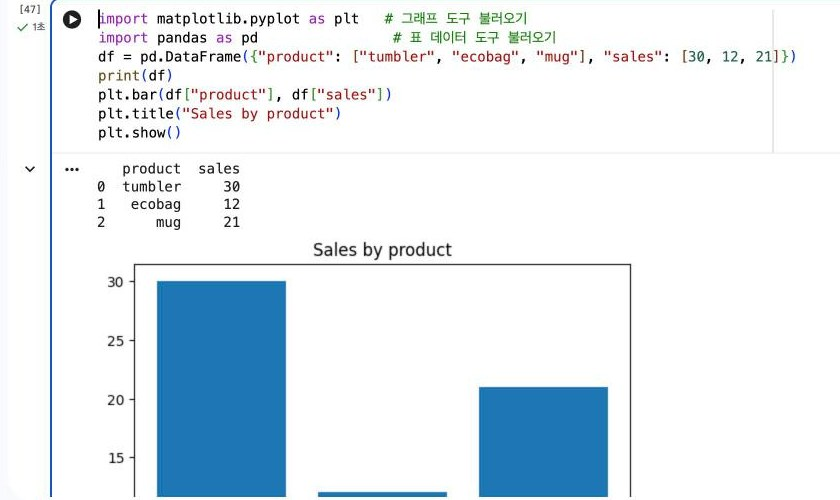
그래프 글자는 영어로 적었어요. 한글을 넣으면 글꼴 설정이 따로 필요할 수 있어요 [확인 필요].
② 결과 칸에 HTML 띄우기
from IPython.display import HTML # 결과 칸에 HTML을 화면으로 보여 주는 도구
HTML("""
<h2 style="color:#2a5bd7">안녕, 셀렉트마켓</h2>
<button onclick="this.innerText='눌렀어요!'">눌러 보세요</button>
""")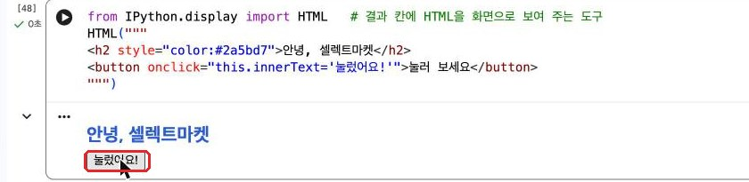
③ 프론트엔드 + 백엔드 헬로 웹
from flask import Flask, jsonify # 웹 서버(백엔드) 도구
import threading
app = Flask(__name__)
@app.route("/") # 프론트엔드: 브라우저에 보낼 화면(HTML)
def home():
return """
<h1>헬로 웹!</h1>
<button onclick="fetch('api/hello').then(r => r.json()).then(d => msg.innerText = d.message)">서버에 물어보기</button>
<p id="msg"></p>
"""
@app.route("/api/hello") # 백엔드: 버튼을 누르면 파이썬이 답하는 곳
def hello():
return jsonify(message="파이썬 서버가 보낸 인사: 안녕!")
threading.Thread(target=lambda: app.run(port=8000), daemon=True).start() # 서버를 뒤에서 실행
from google.colab import output
output.serve_kernel_port_as_iframe(8000) # 런타임의 8000번 포트 화면을 결과 칸에 표시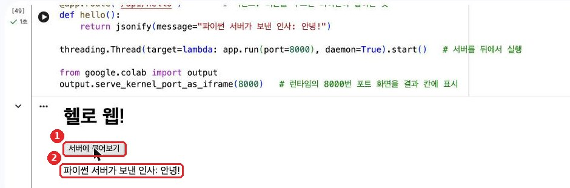
이 서버는 런타임이 끊기면 함께 꺼져요. 다시 보려면 셀을 다시 실행해요.
Colab에 설치된 파이썬 버전은 최신 버전보다 조금 늦게 따라가는 경우가 많아요. 실습 1-3에서 확인한 버전이 최신이 아니어도 괜찮아요. 오늘 배우는 기초 문법은 버전과 관계없이 똑같이 동작해요.
- 실습 1-3에서 확인한 Colab의 파이썬 버전과 최신 버전(3.15)을 비교해 봤나요?
오늘의 목표는 문법을 외우는 것이 아니라 "코드가 이렇게 생겼고, 이렇게 실행되는구나"를 손으로 느껴 보는 거예요.
오프더레코드 ① 파이썬은 크리스마스 휴가 때 "취미"로 시작했어요눌러서 펼쳐 보세요
파이썬을 만든 귀도 반 로섬은 파이썬 책 서문에 이렇게 썼어요. 1989년 12월, "크리스마스 주간에 할 '취미' 프로그래밍 프로젝트를 찾고 있었다". 지금은 AI 개발에 가장 많이 쓰이는 언어 중 하나가 휴가 때 심심풀이로 시작한 셈이에요.
이름은 뱀이 아니에요. 같은 글에서 그는 "약간 장난스러운 기분이었고, 영국 코미디 프로그램 Monty Python's Flying Circus의 열렬한 팬이라서" 이름을 파이썬으로 지었다고 했어요. 로고에 뱀이 있지만 원래 뜻은 코미디 그룹 이름이에요.
Colab에서 직접 해 보기: 새 셀에 import this를 실행하면 파이썬이 추구하는 원칙 19줄, "파이썬의 선(The Zen of Python)"이 나와요. 그중 한 줄은 "Although that way may not be obvious at first unless you're Dutch."(처음엔 그 방법이 분명하지 않을 수 있어요. 네덜란드 사람이 아니라면요.)예요. 네덜란드 사람인 귀도를 두고 한 농담이에요.
import this # 파이썬의 선(The Zen of Python) 출력
출처: Guido van Rossum, Foreword for "Programming Python" (python.org) · import this 출력은 Python 3에서 직접 실행해 확인, 2026-10-29
오프더레코드 ② 귀도 반 로섬: "자비로운 종신 독재자"눌러서 펼쳐 보세요
| 시기 | 이야기 |
|---|---|
| 1956년 | 네덜란드 헤이그에서 태어났어요. |
| 오랫동안 | 파이썬 커뮤니티는 그를 BDFL(Benevolent Dictator For Life, 자비로운 종신 독재자)이라고 불렀어요. 의견이 갈릴 때 마지막 결정을 내리는 사람이라는 뜻의 애칭이에요. |
| 2005~2012년 | Google에서 일하며 근무 시간의 절반을 파이썬 개발에 썼어요. |
| 2013~2019년 | Dropbox에서 일했고, 2019년 10월 은퇴했어요. |
| 2018년 7월 12일 | "종신" 독재자 자리를 스스로 내려놓았어요. 이후 2019년까지 파이썬 운영위원회(Steering Council) 위원으로 활동했고, 2020년 선거에는 나서지 않았어요. |
| 2020년 11월 12일 | 은퇴 1년 만에 은퇴를 번복하고 Microsoft 개발자 부서에 합류했어요. |
PM에게 주는 의미: "종신 독재자"도 커뮤니티가 커지자 결정 구조를 바꿨어요. 제품이 커지면 누가 최종 결정을 내리는지도 다시 설계해야 해요.
출처: Wikipedia: Guido van Rossum, 2026-10-29 확인
기초 문법 ① 변수와 조건
지금부터는 개념 설명을 먼저 듣지 않고, 코드를 먼저 실행해 본 다음 방금 무슨 일이 일어났는지 이해하는 순서로 진행해요. 직접 결과를 본 뒤에 이름을 붙이면 훨씬 쉽게 기억에 남아요. 모든 실습은 복사 → 붙여 넣고 실행 → 결과 확인 → 설명 읽기 네 단계로 하고, 마지막으로 값을 하나 바꿔 다시 실행해요.
4-0. 실습하는 방법
- 코드를 일부만 드래그해서 복사하면 들여쓰기가 깨져
IndentationError가 날 수 있어요. [복사] 버튼을 써요. - 코드가 있는 셀에 붙여 넣으면 기존 코드 뒤에 이어 붙어요. 실습마다 빈 새 셀에 붙여 넣어요.
- 고치기만 하고 실행하지 않으면 결과 칸은 예전 그대로예요. 고친 뒤에는 꼭 다시 실행해요.
- 직접 타이핑하면 닫는 괄호·따옴표가 자동으로 생겨요(아래 그림). 줄 끝에 괄호가 남지 않았는지 봐요.
이해가 안 되는 부분은 Gemini에게 "왜 이렇게 나와?"라고 물어봐요. 이 세션부터는 Gemini 대화창의 학습 모드를 켜 두는 것을 권장해요. 정답을 바로 받는 대신 힌트를 받으며 스스로 고치게 되어 실력이 남아요. 내 화면에 학습 모드가 보이지 않으면 Gemini나 ChatGPT·Claude에게 "정답 코드 말고 힌트만 단계별로 줘"라고 요청하면 같은 방식으로 연습할 수 있어요.
세션 7(실습 7-1)처럼 Gemini가 코드를 직접 고치게 할 때는 기본 모드로 바꿔요.
4-1. 실습: 변수
실습 실행한 뒤 같은 셀에서 qty = 3의 3을 지우고 5로 바꿔 다시 실행해 보세요.
product = "텀블러" # 글자(문자열)는 따옴표로 감싸서 저장 price = 15000 # 숫자는 따옴표 없이 저장 qty = 3 # 수량 print(product, price * qty, "원") # 저장한 이름으로 값을 꺼내 계산하고 출력
텀블러 45000 원
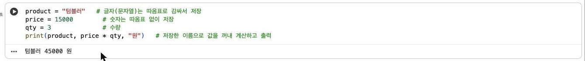
방금 무슨 일이 일어났나price = 15000은 15000이라는 값에 price라는 이름표를 붙여 저장한 거예요. 이렇게 값에 이름을 붙여 저장해 두는 것을 변수라고 해요. qty를 5로 바꾸면 결과가 75000으로 바뀌어요. 값을 바꾸면 그 이름을 쓰는 모든 계산이 함께 바뀌어요.
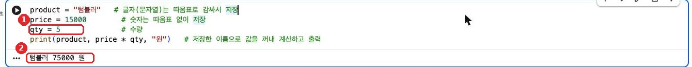
더 해 보기: 배송비 변수 더하기 새 코드 셀에서 실행해요.
product = "텀블러" # 상품 이름 price = 15000 # 상품 가격 qty = 3 # 수량 shipping = 3000 # 배송비라는 새 변수 total = price * qty + shipping # 상품 금액에 배송비를 더해 total에 저장 print(product, "결제 금액:", total, "원")
텀블러 결제 금액: 48000 원
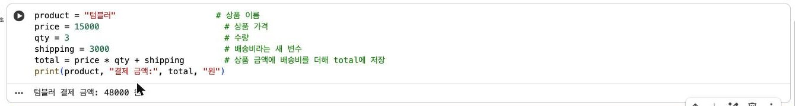
- 첫 코드에서 "텀블러 45000 원"이 나왔나요?
qty를 5로 바꾸자 75000으로 바뀌었나요?- 배송비 코드에서 48000이 나왔나요? 15000 × 3 + 3000을 직접 계산해 맞는지 확인했나요?
- 글자는 따옴표로 감싸고 숫자는 따옴표 없이 쓴다는 차이를 말할 수 있나요?
4-2. 실습: 조건
실습 실행한 뒤 stock을 3, 10으로 바꿔 가며 결과를 비교해 보세요.
stock = 0 # 재고 수량
if stock == 0: # 만약 재고가 0과 같다면 (== 는 "같다"는 비교)
print("품절")
elif stock < 5: # 아니고, 만약 5보다 작다면
print("품절 임박")
else: # 둘 다 아니라면
print("구매 가능")품절
방금 무슨 일이 일어났나
값에 따라 다른 문장이 출력돼요. stock이 3이면 "품절 임박", 10이면 "구매 가능"이 나와요. 이렇게 상황에 따라 다른 행동을 하게 만드는 것을 조건문이라고 해요. if 아래 줄이 안쪽으로 들어가 있는 것(들여쓰기)은 "이 조건일 때 실행할 부분"이라는 표시예요. =는 저장, ==는 비교라는 점에 주의해요.
| stock 값 | 나와야 하는 결과 |
|---|---|
| 0 | 품절 |
| 3 | 품절 임박 |
| 10 | 구매 가능 |
더 해 보기: 무료배송 조건 만들기 셀렉트마켓의 규칙은 "주문 금액 3만 원 이상이면 무료배송"이에요. "이상"은 >=로 써요.
order = 28000 # 주문 금액
if order >= 30000: # 3만 원 "이상"이면 (>= 는 크거나 같다)
print("무료배송")
else: # 그렇지 않으면
print("배송비 3,000원")배송비 3,000원
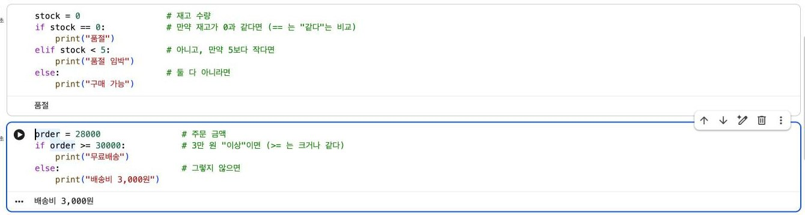
order를 30000으로 바꿔 실행하면 "무료배송"이 나와야 해요. 딱 경계에 있는 값(30000)을 넣어 보는 습관은 다음 수업의 오류 검증에서 다시 써요.
- stock 0, 3, 10의 결과가 위 표와 같았나요?
- order 28000은 "배송비 3,000원", 30000은 "무료배송"이 나왔나요?
if아래 줄의 들여쓰기를 지우면 어떻게 되는지 한 번 해 보고, 나온 오류의 맨 아래 줄을 채팅에 남겼나요?
기초 문법 ② 리스트와 반복
값 하나가 아니라 여러 값을 한 번에 다루는 방법이에요. 상품 목록, 주문 목록처럼 서비스에서 보는 대부분의 화면은 리스트와 반복으로 만들어져요.
5-1. 실습: 리스트
실습 여러 값을 한 번에 다루는 방법이에요.
menus = ["김치찌개", "돈까스", "쌀국수"] # 대괄호 안에 여러 값을 순서대로 저장
print(menus[0]) # 0번째 = 첫 번째 값 꺼내기
menus.append("비빔밥") # 리스트 끝에 값 추가
print(len(menus), menus) # len()은 개수 세기김치찌개 4 ['김치찌개', '돈까스', '쌀국수', '비빔밥']
방금 무슨 일이 일어났나
여러 개의 값을 대괄호 안에 순서대로 묶어 하나의 이름으로 저장한 것을 리스트라고 해요. menus[0]이 첫 번째 값인 이유는 파이썬이 순서를 0부터 세기 때문이에요. menus[1]로 바꿔 실행하면 "돈까스"가 나와요.
더 해 보기: 셀렉트마켓 상품 목록
items = ["텀블러", "에코백", "머그컵"] # 셀렉트마켓 상품 리스트
print(items[-1]) # -1은 맨 뒤 값
items.remove("에코백") # 리스트에서 값 빼기
print(items)머그컵 ['텀블러', '머그컵']
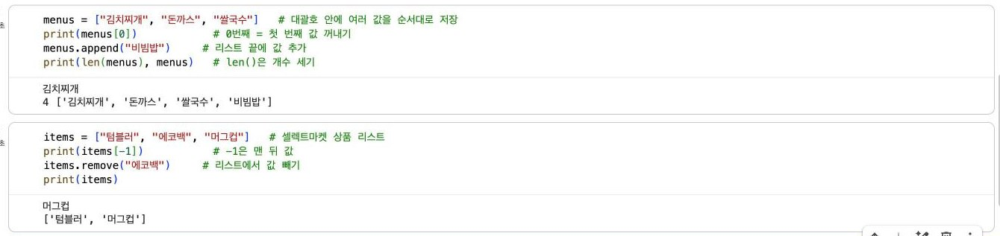
menus[0]이 "김치찌개",menus[1]이 "돈까스"로 나왔나요?- 비빔밥을 추가한 뒤 개수가 4로 나왔나요?
items[-1]이 "머그컵"으로 나왔나요?- 에코백을 뺀 뒤 리스트에 두 개만 남았나요?
5-2. 실습: 반복
실습 코드는 한 번만 썼는데 결과가 몇 줄 나오는지 보세요.
prices = [15000, 9000, 12000] # 가격 리스트
for p in prices: # 리스트에서 값을 하나씩 꺼내 p에 담고 아래를 반복
print(p, "원의 할인가는", int(p * 0.9), "원") # 10% 할인가 계산 후 출력15000 원의 할인가는 13500 원 9000 원의 할인가는 8100 원 12000 원의 할인가는 10800 원
방금 무슨 일이 일어났나
리스트에 든 값을 하나씩 꺼내 같은 일을 되풀이하게 하는 것을 반복문이라고 해요. 가격이 3개든 3,000개든 코드는 그대로예요. 리스트에 가격을 하나 추가해 실행하면 결과도 한 줄 늘어나요.
더 해 보기: 장바구니 합계 구하기 반복하면서 값을 하나씩 더해 가는 방법이에요.
prices = [15000, 9000, 12000] # 장바구니에 담은 상품 가격
total = 0 # 합계를 담을 변수를 0으로 시작
for p in prices: # 가격을 하나씩 꺼내
total = total + p # 지금까지의 합계에 더함
print("장바구니 합계:", total, "원")
print(sum(prices)) # 파이썬에 있는 합계 기능으로 다시 계산장바구니 합계: 36000 원 36000
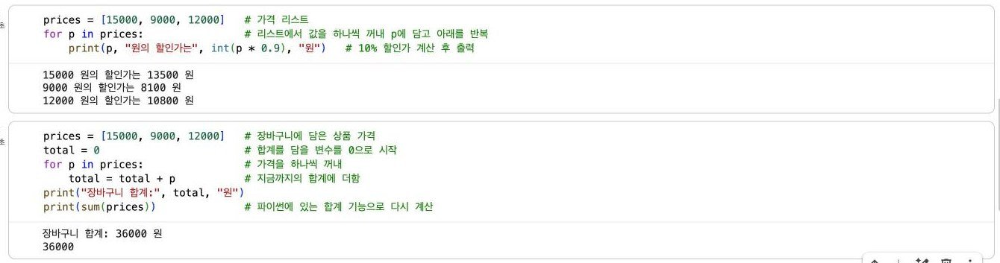
같은 합계를 두 가지 방법(반복문으로 더하기, sum())으로 구해 숫자가 같은지 비교했어요. 다른 방법으로 계산해 같은 숫자가 나오는지 보는 것은 가장 기본적인 검증 방법이에요.
- 할인가 세 줄이 나왔나요?
- 리스트에 가격을 하나 추가하자 결과도 한 줄 늘었나요?
- 반복문 합계와
sum()결과가 모두 36000으로 같았나요? for아래 줄이 들여쓰기되어 있다는 것을 확인했나요?
기초 문법 ③ random과 종합하기
남이 만들어 둔 기능 묶음을 불러와 쓰는 방법(import)을 익히고, 지금까지 배운 다섯 가지를 한 코드에 모아 상품 목록 화면의 로직을 만들어요.
6-1. 실습: random
실습 같은 셀을 여러 번 실행해 보세요.
import random # 파이썬에 들어 있는 "무작위 기능 묶음" 불러오기
menus = ["김치찌개", "돈까스", "쌀국수", "비빔밥"]
print("오늘 점심은", random.choice(menus)) # 리스트에서 하나를 무작위로 골라 출력오늘 점심은 쌀국수 ← 실행할 때마다 달라져요
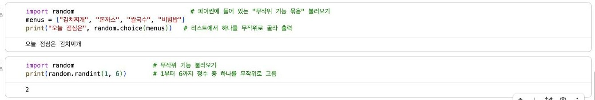
방금 무슨 일이 일어났나import random은 미리 만들어져 있는 기능 묶음을 불러온 것이고, random.choice는 리스트에서 하나를 무작위로 골라요. 결과가 매번 달라지는 것이 정상이에요. 이렇게 남이 만들어 둔 기능 묶음을 불러와 쓰는 방식은 다음 수업의 데이터 분석(pandas)에서도 똑같이 쓰여요.
더 해 보기: 주사위 굴리기
import random # 무작위 기능 불러오기 print(random.randint(1, 6)) # 1부터 6까지 정수 중 하나를 무작위로 고름
- 여러 번 실행했을 때 점심 메뉴가 바뀌었나요?
- 주사위 결과가 늘 1~6 사이의 숫자였나요? 0이나 7이 나오지 않는지 5번 이상 실행해 확인했나요?
6-2. 실습: 종합하기
실습 지금까지의 다섯 가지를 한 번에 쓰면 상품 목록 화면의 로직이 돼요.
import random # 무작위 기능 불러오기
products = [ # 리스트 안에 상품 정보 묶음을 여러 개 저장
{"name": "텀블러", "price": 15000, "stock": 3},
{"name": "에코백", "price": 9000, "stock": 0},
{"name": "머그컵", "price": 12000, "stock": 5},
]
for p in products: # 상품을 하나씩 꺼내 반복
if p["stock"] == 0: # 재고가 0이면
print(p["name"], "- 품절")
else: # 아니면 가격을 천 단위 쉼표로 표시
print(p["name"], "-", f'{p["price"]:,}원')
print("오늘의 추천:", random.choice(products)["name"]) # 무작위 추천텀블러 - 15,000원 에코백 - 품절 머그컵 - 12,000원 오늘의 추천: 머그컵 ← 마지막 줄은 실행할 때마다 달라져요
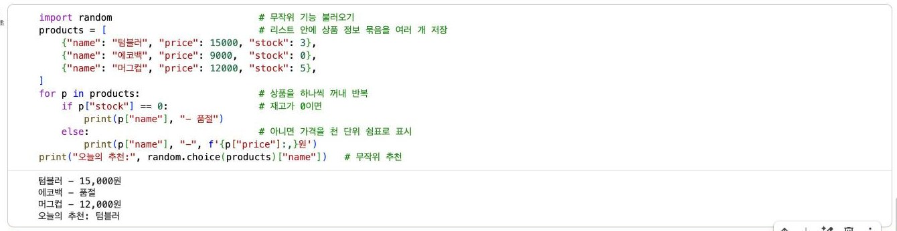
방금 무슨 일이 일어났나
리스트로 데이터를 저장하고, 반복으로 하나씩 꺼내고, 조건으로 품절을 판단하고, random으로 추천했어요. 중괄호 { } 안에 "이름: 값"을 묶은 것은 상품 한 개의 정보 카드라고 생각하면 돼요. 그런데 여러 번 실행해 보면 품절인 에코백이 추천되는 경우가 있어요. 이것이 세션 7에서 AI와 함께 고칠 "기획 의도와 다른 결과"예요.
- 상품 세 줄이 위 결과처럼 나왔나요? 에코백만 "품절"로 나왔나요?
- 5번 이상 실행해서 "오늘의 추천: 에코백"이 나오는 경우를 봤나요? 봤다면 채팅에 남겨요.
- 이 코드에서 변수·조건·리스트·반복·random이 각각 어느 줄에 있는지 짚을 수 있나요?
6-3. 개념 퀴즈: 다섯 단어로 말하기
실습 채팅에 번호와 답만 남겨요.
| 번호 | 질문 |
|---|---|
| Q1 | price = 15000과 price == 15000은 무엇이 다른가요? |
| Q2 | items = ["텀블러", "에코백", "머그컵"]에서 items[1]은 무엇인가요? |
| Q3 | if나 for 아래 줄을 안쪽으로 들여 쓰는 이유는 무엇인가요? |
| Q4 | "상품이 3개든 3,000개든 코드는 그대로"인 문법은 무엇인가요? |
| Q5 | "주문 금액 3만 원 이상"을 코드로 쓸 때 >와 >= 중 무엇을 써야 하나요? |
정답 확인눌러서 펼쳐 보세요
| 번호 | 정답 | 다시 볼 곳 |
|---|---|---|
| Q1 | =는 값을 저장, ==는 같은지 비교 | 실습 4-2 |
| Q2 | "에코백" (순서를 0부터 세기 때문) | 실습 5-1 |
| Q3 | "이 조건일 때(또는 반복할 때) 실행할 부분"이라는 표시 | 실습 4-2 |
| Q4 | 반복문(for) | 실습 5-2 |
| Q5 | >= ("크거나 같다"). >는 "초과" | 실습 4-2 더 해 보기 |
- 다섯 문제 중 네 개 이상 맞혔나요?
- 틀린 문제는 "다시 볼 곳"의 실습을 한 번 더 실행했나요?
AI로 고치고 검증하기
실습 6-2의 "품절 상품이 추천되는" 문제를 Gemini에게 고쳐 달라고 해요. AI가 고쳤다고 끝이 아니에요. 기대한 결과가 실제로 나오는지 실행해서 확인해야 검증이 끝나요.
7-1. 실습: AI로 고치고 검증하기
실습 Gemini에게 요청하면 실습 6-2 셀 안에서 직접 바꿀 부분을 보여 줘요. 고친 뒤에는 실행해서 기대한 결과와 비교해요.
STEP 1. 기대한 결과 먼저 확인하기
| 확인 항목 | 기대한 결과 |
|---|---|
| 상품 목록 세 줄 | 텀블러 - 15,000원 / 에코백 - 품절 / 머그컵 - 12,000원 (고치기 전과 같아야 해요) |
| 오늘의 추천 (10번 실행) | 텀블러 또는 머그컵만 나와요. 에코백은 한 번도 나오지 않아야 해요. |
STEP 2. Gemini 준비하기
STEP 3. Gemini에게 고치게 하기
요청: 실습 6-2 상품 목록 코드에서 품절 상품(stock이 0인 상품)은 "오늘의 추천"에 나오지 않게 고쳐 줘. 내용: 상품은 텀블러(가격 15000, 재고 3), 에코백(가격 9000, 재고 0), 머그컵(가격 12000, 재고 5) 세 개야. 지금은 품절인 에코백도 추천될 때가 있어. 형식: 고친 코드 전체를 보여 주고, 바꾼 줄에는 주석으로 설명을 달아 줘. 상품 목록 출력 부분은 바꾸지 말고, 새 상품이나 새 기능은 추가하지 마. 확실하지 않은 부분은 [확인 필요]로 남겨 줘.
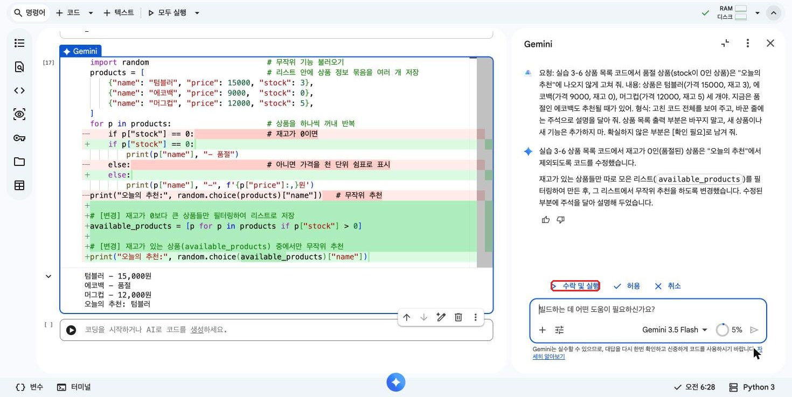
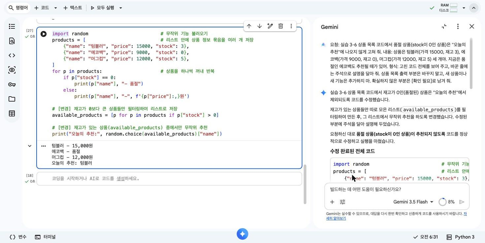
STEP 4. 10번 실행해서 비교하기
① 10번 실행 결과: 텀블러 6번, 머그컵 4번, 에코백 0번. 기대한 결과와 같았어요.
② 그런데 Gemini가 요청하지 않은
if/else 줄의 주석까지 지웠어요. 결과는 같아도 묻지 않은 줄이 바뀌었는지 빨간 줄을 꼭 확인해요.③ Gemini 답은 매번 조금씩 달라요. 표의 기대 결과가 나오면 통과예요.
④ Gemini 창에서 바로 단축키를 누르면 다른 셀이 실행될 수 있어요. 실행 전에 셀을 먼저 클릭해요.
- Gemini가 바꾼 줄이 추천 부분에만 있나요? 상품 목록 출력 줄과 주석은 그대로인가요?
- 10번 실행하는 동안 에코백이 한 번도 추천되지 않았나요?
- Gemini가 묻지 않은 기능을 덧붙이지 않았나요?
- 어떤 방법으로 품절 상품을 뺐는지 한 문장으로 말할 수 있나요?
7-2. 실습: 새 대화창에서 교차 검토하기
실습 [이 단계는 수강생 개인 ChatGPT·Claude 계정 화면이라 교안 캡처 없이 강사 화면으로 시연해요]
세션 2에서 배운 원칙대로, 코드를 고친 Gemini 대화가 아니라 ChatGPT나 Claude의 새 채팅에서 검토를 받아요.
요청: 아래 파이썬 코드가 "품절 상품(stock이 0)은 오늘의 추천에서 빠진다"는 규칙을 지키는지 검토해 줘. 내용: [Gemini가 고친 코드 전체를 여기에 붙여 넣기] 형식: 판정(지킨다 / 지키지 않는다) 한 줄, 근거가 되는 코드 줄 1~2개, 직접 실행해 확인할 방법 1가지. 코드를 새로 고쳐 쓰거나 기능을 추가하지 말고, 확실하지 않으면 [확인 필요]로 남겨 줘.
- 새 채팅에서 물었나요? (Gemini 대화창이나 코드를 만든 대화가 아닌 곳)
- 검토 결과의 판정이 내가 10번 실행해 본 결과와 같은가요?
- AI가 알려 준 "근거가 되는 코드 줄"이 실제 코드에 있는 줄인가요?
- 판정이 내 실행 결과와 다르면, 어느 쪽이 맞는지 실행 결과를 기준으로 판단했나요?
오늘 정리와 복습
- Colab은 설치 없이 브라우저에서 파이썬을 실행하는 온라인 노트예요. 코드 셀은 실행하고, 텍스트 셀에는 의도와 결과를 기록해요.
- 프로그램은 입력 → 처리 → 출력 순서로, 위에서 아래로 한 줄씩 실행돼요. 순서가 곧 로직이에요.
- 기초 문법 다섯 가지: 변수(값에 이름표), 조건(상황에 따라 다르게), 리스트(여러 값 묶음), 반복(하나씩 꺼내 같은 일), random(불러와 쓰는 기능 묶음).
- AI가 고친 코드는 기대한 결과를 먼저 적고, 실행해서 비교해야 검증이 끝나요. 검토는 새 대화창이나 다른 AI에게 맡겨요.
복습 (선택, 40분)
- 세션 4~6의 코드를 새 노트에 복사하지 말고 직접 타이핑해 실행해 보세요.
- 셀마다 Gemini 설명을 받아 텍스트 셀에 한 줄로 요약해 두세요.
- 오늘 노트
PM파이썬_내이름이 구글 드라이브의 "Colab Notebooks" 폴더에 저장되어 있는지 확인하세요.
오늘 배운 변수·조건·반복이 데이터 분석 도구 pandas에서 어떻게 쓰이는지 주문 데이터 300건으로 실습해요. 코드가 틀렸을 때 알아차리는 방법(기대값 테스트)을 익히고, 파이썬과 웹사이트가 어떻게 연결되는지 정리해요.